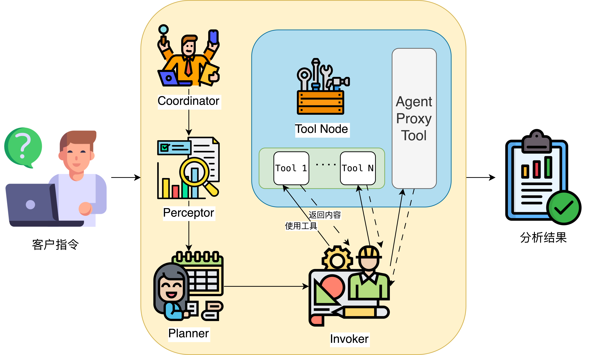

DataPilot
DataPilot 是一个面向金融等多个领域，进行数据分析和知识管理的智能代理系统。支持自动化数据表、工具、知识库的注册、管理和查询，集成了知识图谱、社区报告、脚本关系抽取等多种功能，适用于企业级数据治理和智能分析场景。
主要特性
- 知识库管理：支持文档分块、嵌入、检索，自动构建知识图谱。
- 元数据管理：自动注册数据表，抽取列描述、数据类型、可连接关系，支持 MySQL、本地 CSV。
- 工具管理：自动注册工具，抽取工具与数据表/列/文件的输入输出关系。
- 可视化：支持知识图谱和元数据关系的 HTML 可视化。
快速开始
环境配置
使用uv基于项目中pyproject.toml文件快速配置环境
# PROJECT_ROOT为项目所在路径
cd $PROJCET_ROOT
uv sync
source .venv/bin/activate
运行主流程
推荐使用如下命令启动（入口为 datapilot/workflow.py）：
export PYTHONPATH=$PROJECT_ROOT/datapilot
python -m datapilot.workflow
用户指令
在 workflow.py 文件，在 __main__ 部分修改 user_query 即可对DataPilot下达指令
if __name__ == "__main__":
user_query = "请输入您的分析任务"
# 示例1：数据分析任务
# user_query = "分析一下各个区域的消费水平，并生成一份报告。所有需要保存的文件都放在 /data1/agent/machengyuan/intermediate_res3 路径下"
# 示例2：菜谱搜索任务
# user_query = "帮我搜索一下番茄炒鸡蛋怎么做"
asyncio.run(run_agent_workflow(user_query))
整体流程

DataPilot整体框架如图所示，由Coordinator、Perceptor、Planner以及Invoker等关键节点实现对用户需求的分析。节点之间的流转控制由Router进行控制，并将在后续实现多轮反思与反馈的功能，从而优化分析结果。各个关键节点的主要功能如下：
- Coordinator：接收用户需求，分析并分发任务。
- Perceptor：感知可用数据和工具，补充上下文。
- Planner：根据感知模块制定具体任务计划。
- Invoker： 执行计划，调用工具，收集结果。
代码核心设计
核心抽象基础框架
这个项目采用了分层的抽象架构，将业务逻辑与具体工作流框架实现分离。有效降低了框架成本，并且在添加新功能时易于拓展，核心逻辑也不会因为框架变化而改变。
BaseNode & 各角色节点
包括Coodinator、Perceptor等节点在内都所有角色节点都继承BaseNode进行实现。优势在于：
- 框架无关性：业务逻辑不依赖具体LangGraph实现
- 统一接口：所有节点遵循相同
process方法签名 - 可扩展性：未来可轻松切换到其他工作流框架
class BaseNode(ABC):
"""基础节点抽象类"""
def __init__(self, node_name: str):
self.node_name = node_name
self.logger = logger
@abstractmethod
def process(self, state: BaseState) -> BaseState:
"""处理状态并返回更新后的状态"""
pass
LangGraphCoordinator
- 职责：负责接收用户需求，分析当前工作流状态，并且可以进行反思（reflect）。
- 核心方法：
reflect(state: BaseState): 反思当前状态，分析需求与上下文。
LangGraphPerceptor
- 职责：负责“感知”当前可用的数据和工具，可从数据库、知识库、工具服务（如 MCP 服务、函数等）等内容中检索相关可用信息。
- 核心方法：
search_knowledge(query: str): 检索知识库，获取背景知识。search_database(query: str, knowledge: str): 检索数据库和工具，获取可用数据。get_mcp_tools():获取可用MCP服务get_available_tools(): 获取当前可用工具列表。
LangGraphPlanner
- 职责：根据协调器和感知器提供的信息，制定具体的任务执行计划，并且并对计划进行可行性验证。
- 核心方法：
generate_plan(state: BaseState): 生成任务执行计划。validate_plan(plan: str, state: BaseState): 验证计划的合理性。
LangGraphInvoker
- 职责：负责进行工具调用并对结果进行收集。后续可扩展为支持反思和用户反馈。
- 核心方法：
generate_tool_calls(state: BaseState): 生成工具调用列表。execute_tool_calls(tool_calls: List[Dict]): 执行工具调用，返回结果。
LangGraphRouter
- 职责：负责对整个工作节点的流转进行调度。
工作流与工作流构建器
基础工作流
工作流也继承基础工作流BaseWorkflow实现
。优势在于：
- 完整性验证：确保工作流配置的完整性
- 统一管理：集中管理所有节点和路由器
- 框架抽象：隐藏具体框架的构建细节
class BaseWorkflow(ABC):
"""基础工作流类"""
def __init__(self):
self.coordinator: Optional[BaseCoordinator] = None
self.perceptor: Optional[BasePerceptor] = None
self.planner: Optional[BasePlanner] = None
self.invoker: Optional[BaseInvoker] = None
self.router: Optional[BaseRouter] = None
# ...
def validate_setup(self) -> bool:
"""验证工作流设置是否完整"""
required_nodes = ["coordinator", "perceptor", "planner", "invoker"]
for node_name in required_nodes:
if node_name not in self.nodes:
self.logger.error(f"Missing required node: {node_name}")
return False
return True
工作流构建器
# 核心实现
class WorkflowBuilder:
"""工作流构建器"""
def __init__(self, workflow_class: type):
self.workflow_class = workflow_class
self.workflow = workflow_class(None, None)
def with_coordinator(self, coordinator: BaseCoordinator):
"""添加协调器"""
self.workflow.register_node(coordinator)
return self
def build(self):
"""构建并返回工作流"""
if not self.workflow.validate_setup():
raise ValueError("Workflow setup validation failed")
return self.workflow.build()
# 使用方法
workflow = await (WorkflowBuilder(LangGraphWorkflow)
.with_coordinator(coordinator)
.with_perceptor(perceptor)
.with_planner(planner)
.with_invoker(invoker)
.with_router(router)
.build())
NodeFactory工厂模式
基于工厂模式统一管理节点的创建和配置，使得与具体类实现进行解耦，并且优化了可拓展性。
抽象工厂
class NodeFactory:
"""节点工厂"""
@staticmethod
def create_coordinator(coordinator_class: type, **kwargs) -> BaseCoordinator:
return coordinator_class(**kwargs)
具体实现工厂
class LangGraphNodeFactory:
"""LangGraph节点工厂"""
@staticmethod
def create_coordinator(llm_config: Dict[str, Any]) -> LangGraphCoordinator:
return LangGraphCoordinator(llm_config)
框架优势
框架设计中分层抽象架构、工程模式等特点，使得团队在实现各个模块时可以有效地进行分工实现，不同团队可以专注于对应节点的实现，并且便于在上线前进行单元测试。虽然抽象层以及构造器的实现增加了代码复杂度，有一定的短期成本。但是降低了框架迁移、功能拓展的成本，可以为框架后续提高、迭代提高效率，有着长远收益。
| 方式 | 直接实例化 | 本框架 |
|---|---|---|
| 安全性 | 运行时发现错误 | 构建时验证错误 |
| 扩展性 | 需修改多处代码 | 只需添加新方法 |
| 维护性 | 散布的配置逻辑 | 集中的构建逻辑 |